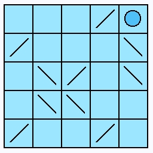
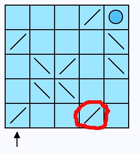
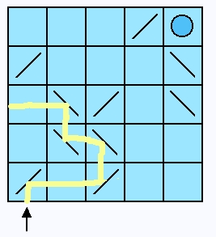
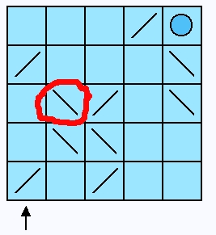
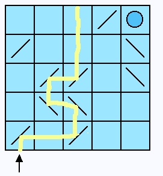
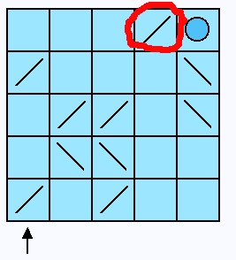
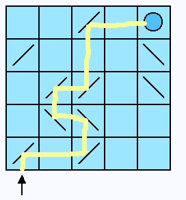

Game Overview
We're going to write a new game for Squeak. I'm not sure how it will look, that's just one part of this little project. But the following ideas should be represented in our game.
The game will be played on a grid. We will imagine to have a laser beam that can be activated by the user. It will fire inside this grid from a specific location. The laser beam will always fire from the bottom edge underneath the first column of cells. As the laser beam traverses inside our grid it can hit deflecting mirrors. These mirrors will divert the laser beam's direction as it travels. Ultimately the beam should hit a target location inside our grid.
The cells of our grid will either be blank, have a target (shown as a circle here) or a deflecting mirror. The mirrors may be oriented in either of two ways, leaning left or right.
Once the laser is fired we can see how the cells guide the laser to a destination. In this case the laser correctly goes to the target cell.

Initial locations and orientations of the mirror cells will be randomly controlled by the game. In the example the mirrors yield a correct result. However, the user has control over mirror rotation and position (to a certain amount). The user can click on a mirror cell and cause the mirror cell to rotate 90 degress. This would alter the laser's direction. Note that if the laser hits a grid wall it ends its path.
The user may also click on a mirror cell and cause it to slide 1 grid-cell in a vertical or horizontal direction. Note that a mirror cell cannot move through the grid walls nor through another mirror cell nor the target cell. In this way the user can adjust the mirror cells to get a desired result.
Since, initially, this is a solitaire game, it becomes more interesting to have the user manipulate the mirrors to stil have the laser complete its path by hitting the target but also by finding the longest path possible.
For example, the user could move the mirror cell shown, one cell to its left and cause the laser to take an alternate path.
 Then by rotating another mirror, get another result.
 As a last step, move one more mirror and get the laser to go back to the target cell. This time the path of the laser is longer than before. And ouf course it was strictly a random coincidence that the initial cells configuration already provided a correct path for the laser.
 That's the general idea. We can add laser cell-path counters and other game instrumentation as we develop.